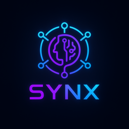

SYNX – Syntari AI Network
SYNX is the native token of Syntari AI Network — a futuristic Layer 1 blockchain empowering AI and creators through Web3.
Token Address:
4daGvqy3fNaAwh8ZUn2WsiMGWfXgGT45w286NGGPX2Jc
View on Solscan
Follow on Twitter
Contact